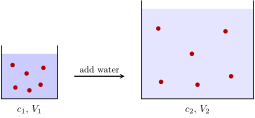

10 dilution: c_1 V_1 = c_2 V_2
If you work with solutions, you will dilute them all the time: take a bit of something concentrated, add water, and get something less concentrated. There is a formula for this that everyone in the lab knows by heart. In this chapter we’ll see where the formula comes from, so that you never have to memorize it.
10.1 the idea: adding water doesn’t add solute
When we dilute a solution, we add solvent, but the amount of solute doesn’t change.
The solute is the thing that is dissolved (salt, sugar, a drug), and the solvent is the liquid it is dissolved in (usually water). Look at the picture below. On the left we have a small volume with some particles of solute. We pour water in, and we get the volume on the right. The same particles are now spread over a larger volume, so the solution is less concentrated.

Same particles, more volume: c_2 < c_1 and V_2 > V_1.
10.2 from the idea to the formula
From concentration and density, we know that the molar concentration is the amount of solute divided by the volume of the solution:
c = \frac{n}{V}
If we multiply both sides by V, we get the amount of solute in a solution of concentration c and volume V:
n = c V
The same is true for any other kind of concentration. With a mass concentration (say, g/L), the same product cV gives the mass of the solute.
Now we use the idea from before. The amount of solute in the concentrated solution (which we call c_1 and V_1) is the same as the amount of solute in the diluted solution (c_2 and V_2):
\underbrace{c_1 V_1}_{\text{solute before}} = \underbrace{c_2 V_2}_{\text{solute after}}
That’s it. This is the dilution equation.
10.3 a first example
We have a stock solution of salt with a concentration of 5 \text{ mol/L}. How can we prepare 200 \text{ mL} of a solution with a concentration of 0.15 \text{ mol/L}?
- Starting point: what we want to make, c_2 = 0.15 \text{ mol/L} and V_2 = 200 \text{ mL}.
- Goal: the volume of stock solution we need, V_1.
- Conversion information: c_1 = 5 \text{ mol/L}, and the dilution equation.
We isolate the unknown:
V_1 = \frac{c_2 V_2}{c_1} = \frac{0.15 \ccancel{gray}{mol/L} \cdot 200 \text{ mL}}{5 \ccancel{gray}{mol/L}} = \boxed{6 \text{ mL}}
We pipette 6 mL of stock, and add water until the total volume is 200 mL. So, the amount of water we add is 200 - 6 = 194 \text{ mL}.
10.4 two things to watch out for
1. V_2 is the final volume, not the volume of water we add. It’s easy to mix them up. In the example above, we did not add 200 mL of water, but 194 mL. In general, V_{\text{water}} = V_2 - V_1 This assumes that volumes just add up, which is a very good approximation for dilute water solutions, but it is not exactly true for every liquid. When we mix ethanol and water, the final volume is a bit smaller than the sum!
2. The units don’t matter, as long as they match. Look at the equation again: c_1 and c_2 appear on opposite sides, and so do V_1 and V_2. That means that we can use any unit for the concentration, as long as it is the same in both, and any unit for the volume, as long as it is the same in both. There is no need to convert anything to liters!
A drug solution has a concentration of 50 \text{ mg/mL}. We take 20\,\mu\text{L} of it and add water until the volume is 2 \text{ mL}. What is the new concentration?
Here the volumes come in different units, \mu\text{L} and \text{mL}, so we need to choose one of them and convert the other. Let’s choose \mu\text{L}, since 2 \text{ mL} = 2000\,\mu\text{L}:
c_2 = \frac{c_1 V_1}{V_2} = \frac{50 \text{ mg/mL} \cdot 20 \ccancel{gray}{$\mu$L}}{2000 \ccancel{gray}{$\mu$L}} = \boxed{0.5 \text{ mg/mL}}
The concentration is still in mg/mL, because that’s the unit we used for c_1.
10.5 the dilution factor
The ratio between the initial and final concentration is called the dilution factor. From the dilution equation:
\frac{c_1}{c_2} = \frac{V_2}{V_1}
In the last example, the dilution factor is 50/0.5 = 100. We say that we diluted the drug “a hundred fold”, or that we made a “1:100 dilution”. This tells us that the solution is 100 times less concentrated, and also that the final volume is 100 times bigger than the volume we took from the stock.
Labs often sell or store stock solutions with a concentration of “10×”, “100×” or “1000×” (“ten X”, “hundred X”, “thousand X”). This means that the stock is that many times more concentrated than the working solution. To use a 1000× stock, we dilute it by a factor of 1000, so we take 1 mL of stock for every liter of final solution.
10.6 it’s the chain-link method in disguise
The dilution equation might look like it’s from a different world than the chain-link method, but it’s not. Let’s solve the first example again with chain-link.
- Starting point: 200 mL of the diluted solution.
- Goal: volume of stock solution.
- Conversion information: 0.15 \text{ mol} \longleftrightarrow 1 \text{ L of diluted solution} \\ 5 \text{ mol} \longleftrightarrow 1 \text{ L of stock solution} \\ 1 \text{ L} = 10^3 \text{ mL}
\begin{align*} &200 \ccancel{red}{mL of diluted} \left( \frac{1 \ccancel{green}{L of diluted}}{10^3 \ccancel{red}{mL of diluted}} \right) \left( \frac{0.15 \ccancel{blue}{mol}}{1 \ccancel{green}{L of diluted}} \right) \left( \frac{1 \ccancel{purple}{L of stock}}{5 \ccancel{blue}{mol}} \right) \left( \frac{10^3 \text{ mL of stock}}{1 \ccancel{purple}{L of stock}} \right) \\ &= \frac{200 \cdot 0.15}{5} \text{ mL of stock} = \boxed{6 \text{ mL}} \end{align*}
In this version we can see the moles acting as the bridge between the two solutions. They are the quantity that doesn’t change during the dilution, which is why the chain-link method works, and which is where the dilution equation comes from.
If you ever forget the dilution equation, or if the problem has an extra twist, you can always go back to chain-link.
10.7 mixing two solutions
What if we don’t add water, but rather mix two solutions of the same solute with different concentrations? The idea is the same, the amount of solute doesn’t change, so we just add the amounts of both solutions:
c_{\text{final}} V_{\text{final}} = c_1 V_1 + c_2 V_2 \qquad\Longrightarrow\qquad c_{\text{final}} = \frac{c_1 V_1 + c_2 V_2}{V_1 + V_2}
We mix 100 \text{ mL} of a 0.2 \text{ mol/L} solution of salt with 300 \text{ mL} of a 0.6 \text{ mol/L} solution of the same salt. What is the final concentration?
c_{\text{final}} = \frac{0.2 \cdot 100 + 0.6 \cdot 300}{100 + 300} \text{ mol/L} = \frac{200}{400} \text{ mol/L} = \boxed{0.5 \text{ mol/L}}
The result is a weighted average of the two concentrations. It’s closer to 0.6 \text{ mol/L} than to 0.2 \text{ mol/L}, because we used more of the stronger solution. That’s a nice sanity check: the final concentration must always be between the two we started with.